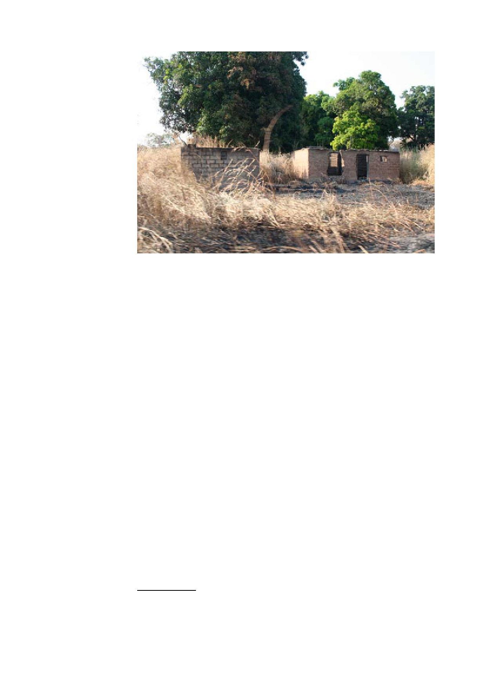

CAR
Rebels
Incidents
Burnt-out civilian house following retaliation operation by the FACA against the
APRD (IPIS 2008)
The North
The North of the CAR is the smallest of the war-affected areas in the country
but it is the only one that harbours two different rebel groups (who have
engaged each other in the past). As in the Northwest, the region used to boast
a rather important cotton industry that has been totally destroyed during the
offensive of Bozizé and his Chadian troops in 2003113. The production has
dropped to less than 10% of what it was at the end of the 1990’s. Recently
the picture has begun to look a bit less grim. The security situation in the
area has improved greatly and the cotton sector is recovering114.
Many humanitarian organisations are present in the area, one of the main
reasons being that the sub-prefecture of Kabo hosts the only camp for
internally displaced persons (IDPs) in the CAR.
Presence of APRD
The northern APRD zone is smaller than its northwestern counterpart. In
general the area under APRD rule is referred to as a triangle (Ouandago-
Batangafo-Kabo), but it controls a few neighbouring axes too and the area
north of Kaga-Bandoro. The APRD controls most of the roads and operates
a number of checkpoints. Commercial transports have to pay a tax the
APRD levies in return for securing the road115. Apart from this tax, people
in the region currently suffer little from rebel activity. The APRD troops
commanded by Colonel Lakoué are disciplined and commit very few human
rights abuses116. On the contrary, it seems that people in the area enjoy a
relative safety. The self-defence groups and coupeurs de route in the area
have been integrated into the ranks of the APRD.
113 It is generally asserted that the Chadian troops that accompanied Bozizé on his march to Bangui in
2003 were allowed to plunder the few riches of the CAR as a form of payment for their efforts.
114 The cotton production has tripled over the last year (source: The Economist Intelligence Unit, Quarterly
Country Report, December 2008).
115 Interview by IPIS with APRD commander in the vicinity of Kaga-Bandoro, November 2008.
116 Interviews by IPIS with local and international sources in Kaga-Bandoro, November 2008.
37